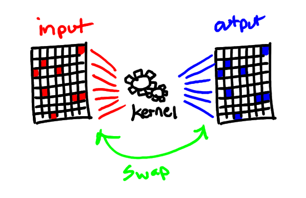

In this post, I implement the Held-Karp algorithm, an exact algorithm
to the Travelling Salesman Problem (TSP). The algorithm is then ported
to run on the GPU in browser, through WebGL, using
gpgpu.js, where it
experiences up to a 100x speedup at the highest node count.
If you like this post and are looking for a developer in Seattle,
take a look at my github
for contact information.
Drag the nodes to recalculate the optimal TSP solution. Switch from the CPU solver to the GPU solver to see the performance differences. Each time the TSP is solved, its benchmark will be averaged and recorded on the chart below the TSP.
Gpgpu.js is a toy utility I wrote specifically for this post. It is designed to abstract away WebGL as a graphics technology and make it behave more like a general-purpose computing technology, like CUDA or OpenCL. This is possible when you consider that GPU-accelerated graphics programming, at the hardware level, is about performing (mostly) independent, highly parallel computations on inputs to produce outputs. For 3d graphics, the inputs are often polygon color, distance from camera, normal vector, light direction, etc, and the output is a pixel color. We can hijack this so that the inputs are homogeneous problem inputs, packed into pixel components, and our output pixels are problem solutions, packed into pixel components.
Gpgpu.js is fairly simple. It allows you to provide an array of inputs and a computation kernel, then perform a mapping of the kernel over the inputs using GPU parallelism to produce an array of outputs.
root = $("#gpgpu")
engine = getEngine root
kernel = "dst = src + tan(cos(sin(src * src)));"
input = [1, 2, 3, 4, 5]
output = engine.execute kernel, inputThe gpgpu.js input and output medium is a Storage object, which is a thinly-wrapped OpenGL texture. Mostly, the transferring of input and output data to and from a Storage object is handled transparently to the user.
There are many limitations of gpgpu.js, due to limitations of WebGL itself, which is based on OpenGL ES 2.0, a very limited OpenGL implementation. It lacks things like dynamic array indexing, hash maps, and bitwise operators — three things we'll specifically need to implement ourselves in order to implement Held-Karp.
Despite the limitations, gpgpu.js is still very powerful. Below is a benchmark of running the following kernel over 100M floats.
CPU Kernel:(num) -> num + Math.tan(Math.cos(Math.sin(num * num)))
dst = src + tan(cos(sin(src * src)));
CPU: 6851.25ms GPU Total: 1449.29ms GPU Execution: 30.64ms GPU IO: 1418.65ms Theoretical Speedup: 223.59x Actual Speedup: 4.73x
As you can see from the benchmark, the cost of transferring data to and from the GPU is expensive, and as such, the longer the computations stay inside the GPU, the further amortized the IO penalty becomes. We'll take advantage of this property when we map Held-Karp to the GPU.
Held-Karp is a dynamic programming algorithm based on the key insight that every subpath of the TSP minimum distance problem is itself a minimum distance problem. What this means, in concrete terms, is that we can compute the optimal costs of the smallest subpaths, cache them, then use them to solve the optimal costs for the next larger subpaths. By repeating this process with larger and larger subpaths, eventually we solve for the full tour of the TSP.
It runs in O(2^{n}n^{2}) time and requires O(2^{n}n) space. In other words, for each node we add, our space and time roughly doubles.
Consider a TSP of 4 nodes, {0, 1, 2, 3}. We first build a n^2 matrix representing the costs of going from each node to each other node. We'll use this matrix as a lookup table in our algorithm. Here's an example matrix filled with random costs. In this particular TSP, notice that A=A^{\mathrm {T}}, or in other words, the matrix is symmetric — the cost from node i to node j is the same cost as j to i. Held-Karp also works on asymmetric TSPs as well.
| 0 | 1 | 2 | 3 | |
|---|---|---|---|---|
| 0 | 0 | 170 | 186 | 114 |
| 1 | 170 | 0 | 343 | 225 |
| 2 | 186 | 343 | 0 | 134 |
| 3 | 114 | 225 | 134 | 0 |
Next we'll construct a list of "queries" of the very smallest minimum distance subpaths, which we'll call "level 0" subpaths. These queries are subproblems that we need to solve in order to build up our solution:
0 to 1, going through no indirect nodes 0 to 2, going through no indirect nodes 0 to 3, going through no indirect nodes
We call this level 0 because we're going through 0 additional nodes — the smallest subpath is a direct connection from the starting node to a target node. Solving the shortest distance for the subpaths in level 0 is trivial; The shortest distance is simply the cost of going from 0 to each node, and we can solve that by using our lookup table. For each query that we solve, we store the optimum distance that we discovered for that query.
The next level of subpaths queries, level 1, introduces 1 indirect node:
0 to 1, through 2 0 to 1, through 3 0 to 2, through 1 0 to 2, through 3 0 to 3, through 1 0 to 3, through 2
Solving level 1 involves looking at level 0 costs and combining it with the
cost for the last hop of the subpath. For example, take 0 to 1, through 2.
We already know, from level 0 solutions, the cost of 0 to 2, going through no indirect nodes.
And our lookup table of costs tells us the cost of the last hop, 2 to 1, so the
total cost is the sum of these two costs. There are actually two additional
hidden steps that we are ignoring for level 1, because they aren't strictly necessary,
but they'll become required in level 2.
Level 2 subpaths introduce 2 indirect nodes:
0 to 1, through 2 and 3 0 to 2, through 1 and 3 0 to 3, through 1 and 2
We solve level 2 in the same way we solved level 1, but at this point it's
important to introduce the concept of a subproblem's solution's "parent." The parent node
is simply the node that comes directly before the final node in the subpath.
For 0 to 1, through 2 and 3, there are two possible parent nodes: node 2 or
node 3. This is because the optimal subpath can either be 0, 3, 2, 1
OR 0, 2, 3, 1. Only one of those two nodes can be the parent, because
only one is the optimal subpath. Recording these parents at each query
will be essential to determining our optimal tour, because we'll use them to
backtrack our way from the final subpath solution to all of the smaller subpath
solutions.
To determine which parent is optimal, we consult our level 1 solutions. From level 1, we already know the optimal cost of going from 0 to 2, through 3. We also know the optimal cost of going from 0 to 3, through 2. And from our lookup table of costs, we know the costs of going from 3 to 1, and from 2 to 1. Using these values, we can determine the optimal cost and the correct parent node associated with that cost. We save the optimal cost, as we did we previous levels, and this time the parent node as well.
Finally, we can construct a level 3 query that satisfies our definition for the TSP:
0 to 0, through 1, 2 and 3
Solving this level, using the same method as previous levels, will yield
the optimal cost. The optimal parents, however, must be backtracked in
order to yield the optimal path. For example, if the parent for
0 to 0, through 1, 2 and 3 is 2, then we must look up the parent of
0 to 2, through 1 and 3. If that is 3, then we must look up the parent
of 0 to 3, through 1, which is obviously 1, which makes the final
parent 0, making the full path 0, 2, 3, 1, 0.
You might be wondering how our subpath queries for all the levels were derived. The requirement is that we generate the set of all possible subpaths in the TSP, so with that in mind, it's easy to see that the set of queries is related to the elements of the power set of our nodes. A power set is simply the family of all subsets, including the empty set and the original set itself. For example, for the set {0, 1, 2, 3} minus the starting node 0, the power set would be:
{}
{1}, {2}, {3}
{1, 2}, {1, 3}, {2, 3}
{1, 2, 3}
To create a subpath level, we simply grab its corresponding powerset level, difference each element with our full set, and cartesian product the result with the original powerset entry. Let's take powerset level 2, entry 0 for example:
\{1,2\}\times \{\{1,2,3\}-\{1,2\}\} = \{3, \{1, 2\}\}
So the entry {1, 2} from the powerset level 2 expands to the query {3,
{1, 2}} or 0 to 3, through 1 and 2 in subpath level 2.
Repeating this process with every element in the powerset yields the
total set of subpath level queries we need to solve.
The time cost of constructing all possible subpath queries is considerable. Fortunately, this construction is not dependent on the edge costs in a given TSP, so the subpath level queries may be generated beforehand and used for every possible TSP of a given size.
Since the eventual GPU solver will also need to benefit from this pre-computed data, we'll store the subpath level queries in image files that we can unpack in javascript using a js canvas and also unpack in our gpgpu.js kernel via texture sampling.
We'll use a python script to compute each subpath level for a given TSP node count, and output that level to its own PNG file.
For a given subpath level, the data we need to represent a query in that level consists of a node to "end at" and a list of nodes to "go through." Representing this data efficiently, though, poses a challenge to scalability, because a level n will have n "go through" nodes. Since we only have 32 bits to work with in our PNG files (8 bits per channel, 4 channels), we will impose a hard limit on the number of nodes an input TSP problem can have. We'll set this hard limit to be 16 nodes.
The data spec we'll use is as follows:
0 to 15, through 1,4,6,7,10,11,13 and 14:
The aspect of Held-Karp that immediately stands out as parallelizable is the subpath query solving. For each possible subpath level, we're performing the same algorithm on the queries it contains:
Implementing these steps seems simple enough in theory, but there are
some caveats, mostly due to limitations of WebGL. Our main limitation
is that we cannot write to the same storage that we're reading from.
In general, this is a limitation with OpenGL textures, which are the
underlying storage mechanisms in gpgpu.js, but we can solve this with
the "ping-pong" technique: write to A while reading from B, then write
to B while reading from A. Since solving each level relies only on the
previous level, ping ponging works out perfectly. It also keeps our
computation GPU-side for longer, meaning that our GPU IO cost is
further amortized over each ping-pong.

According to the Held-Karp algorithm, we're going to need three sources of data:
We define the first data source as a shader-global input variable known in the OpenGL world as a "uniform." Think of it as a global variable that does not vary (or, is uniform) over our shader execution. A uniform is a good choice for this data because, while size is limited, lookups are very fast (relative to texture sampling).
The next data source is the previous level of subpath query solutions. Because we're using the "ping-pong" technique, a previous level query is obtained by sampling the previous output texture.
Which brings us to our final data source: the description of the current query. Due to the sheer number of queries we must work through, we cannot use a uniform (uniforms are size limited), so we must use an additional gpgpu.js Storage object. We populate this texture with the data spec from earlier, with our "end at" and "go through" values encoded in the pixel colors.
In our kernel, we've defined how to get our cost matrix, how to access previous query solutions, and how to determine our current subpath query. All that's left is stitching these concepts together. Below is the coffeescript pseudo code representing what is happening under the hood at a very high level:
In javascriptnumLevels = _.size nodes
pingPong = [output1, output2]
# solve the subpath queries at each level
for curLevel in [0...numLevels]
runKernel(pingPong[0], pingPong[1], subpathQueryTex, curLevel, costMatrix)
pingPong.reverse()
# looking at the optimal parents recorded in the outputs, we can determine
# the optimal path through the TSP
path = backtrackParents pingPongminCost = Infinity
minParent = null
[endAt, goThrough] = unpackCurrentComputationQuery inputPixel
for checkParent in numNodes
# see if the bit flag for our parent is on, if it is, lets consider
# it as a viable parent
if bitIsOn goThrough, checkParent
# construct the relevant query at our previous level
queryGoThrough = bitOff goThrough, checkParent
queryEndAt = checkParent
lastLevelQuery = [queryEndAt, queryGoThrough]
# look up our previous level solution now that we have a query
solutionIdx = hashQueryToIdx lastLevelQuery
subpathCost = lookupQuerySolution lastLevelOutputTex, solutionIdx
totalSubpathCost = subpathCost + (lookupCost checkParent, endAt)
if totalSubpathCost < minCost
minCost = totalSubpathCost
minParent = checkParent
outputPixel = encodeCostAndParent minCost, minParentThat's it! If you made it this far, you're a beast. I urge you to take a look at the actual source code for the GPU kernel, as it contains some interesting solutions to tricky problems that would have taken too long to go into in this post.